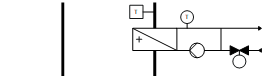
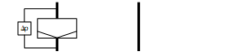
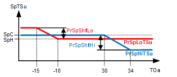
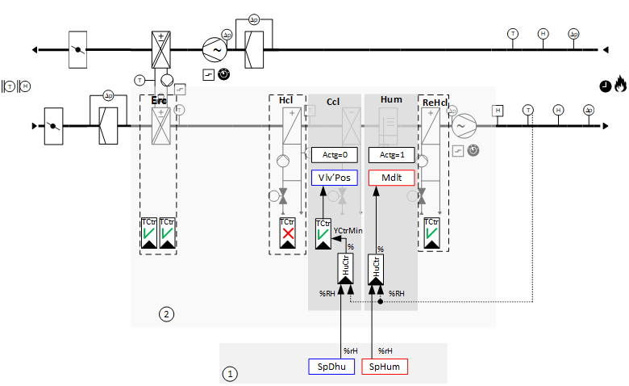
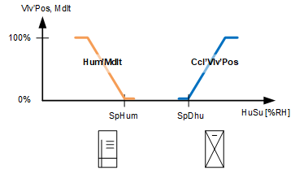

[Ahu24]空气处理机组、送风温度、送风湿度控制、压力控制
工厂示例 Ahu24 具有速度控制风扇、冷冻水冷却盘管、热水加热盘管、热水再加热盘管、带循环盘管的能量回收、加湿器和截止风门。
Functions
- Supply air temperature control
- Supply air humidity control
- Pressure control
Plant diagram

Components
- Fans, speed-controlled
- Shutoff dampers
- Energy recovery with run-around coil
- Hot water heating coil
- Chilled water cooling coil
- Hot water reheating coil
- Humidifier
设备示例的组件和功能：
成分 | 功能 | BACnet object |
|---|---|---|
| Fire detection contact 将工厂切换至：Off | [BI]Fire detection contact |
| Manual operating mode selection 将工厂切换至：Auto | Off | On | [MCnfVal]Manual operating mode selection |
| Scheduler program 将工厂切换至：Off | On | [MSchedule]Scheduler |
| Present operating mode 报告当前操作模式：Off | On | [MCalcVal]Present operating mode |
| Reason for present operating mode 报告当前操作模式的原因：异常 |工作模式切换 |Manual operating mode selection|调度程序|开关动作操作 | [MCalcVal]Reason for present operating mode |
| Temperature control basic setpoints (1) 排风温度上限（制冷设定值）和下限（制热设定值）设定值 Function diagram for temperature control basic setpoints (1) | [ACnfVal]Setpoint for cooling [ACnfVal]Setpoint for heating |
| Seasonal temperature compensation (2) 根据室外温度校正高和低抽气温度设定值。 | [BCalcVal]Seasonal temperature compensation > [ACalcVal]Present setpoint high for supply air temperature > [ACalcVal]Present setpoint low for supply air temperature |
| Humidity control basic setpoints (1) 送风湿度上限（除湿设定值）和下限（加湿设定值）设定值 | > [ACnfVal]Setpoint for dehumidification > [ACnfVal]Setpoint for humidification |
| Exhaust air differential pressure sensor 测量管道与环境之间的压差。 | [AI]Extract air pressure （位于 |
Monitor negative pressure 压力过低时，将设备切换至： 关闭 |
| |
Flow monitoring extract air 如果打开风扇后未形成压差，则设备将关闭。 监控风门和风扇。 | > [BCalcVal]Flow monitoring | |
| Supply air differential pressure sensor 测量管道与环境之间的压差。 | > [AI]Supply air pressure （位于 |
Monitor positive pressure 压力过高时，将设备切换至： 关闭 |
| |
Flow monitoring supply air 如果打开风扇后未形成压差，则设备将关闭。 监控风门和风扇。 | > [BCalcVal]Flow monitoring | |
Extract air temperature sensor 测量排气温度。 | > [AI]Extract air temperature | |
| Extract air humidity sensor 测量抽气湿度。 | > [AI]Extract air humidity |
| Supply air temperature sensor 测量送风温度。 | > [AI]Supply air temperature |
Supply air humidity sensor 测量送风湿度。 | > [AI]Supply air humidity | |
Humidity detector 限制最大相对送风湿度。 | > [BI]Humidity detector （位于 | |
Supply air fan |
| |
压力控制器 控制供气压力。 | > [控制器]Pressure controller
| |
供气压力设定值 确定供气压力的设定值。 | > [ACnfVal]Setpoint supply air pressure
| |
命令 根据需要打开 /off 风扇。 | > [BO]Command | |
速度 将风扇速度控制在 0 到 100 [%] 之间。 | > [AO]Speed | |
维护开关 关闭风扇和设备。 风扇输出以高优先级 (Prio 2) 被本地阻止。 | > [BI]Maintenance switch | |
故障信息 故障消息，例如来自外部电机控制（变速驱动器）。 关闭风扇和设备。 | > [BI]Fault | |
体积流量计算 测量并计算体积流量。 |
| |
Differential pressure sensor for volume flow calculation 测量风扇上为体积流量测量准备的测量点之一的压差。 | > [AI] 风量流量计算的压差 | |
显示体积流量。 | > [ACalcVal]Air volume flow | |
| Reheating coil |
|
向热量分配报告热水需求。 | > [BCalcVal]Hot water demand | |
Pump |
| |
泵命令 根据需要打开/off 泵。 | > [BO] Command | |
外部气温较低时泵运行 泵始终在较低的外部温度下运行（防冻）。 |
| |
反冲功能（泵反冲） 防止泵在长时间闲置期间卡住。 |
| |
Valve |
| |
温度控制器 控制送风温度。 | > [控制器]Temperature controller | |
阀门位置 控制阀门位置：0...100 [%] | > [AO] 位置 | |
| Humidifier |
|
湿度控制器 控制送风湿度（加湿）。 | > [控制器]Humidity controller | |
命令 根据需要打开/off加湿器。 | > [BO] Command | |
控制 控制加湿器：0和100[%] | > [AO]Modulating | |
故障信息 上报外部加湿器故障的故障信息。 | > [BI] Fault | |
| Cooling coil |
|
向冷却分配报告冷冻水需求。 | > [BCalcVal]Chilled water demand | |
Valve |
| |
温度控制器 控制送风温度。 | > [控制器]Temperature controller | |
湿度控制器 控制送风湿度（除湿）。 | > [控制器]Humidity controller | |
阀门位置 控制阀门位置：0...100 [%] | > [AO] 位置 | |
 | Heating coil
|
|
向热量分配报告热水需求。 | > [BCalcVal]Hot water demand | |
防冻保护 防止热水加热盘管冻结。 防冻控制器在回水温度下降时打开阀门（调节），例如低于 10 [°C]。 如果防冻保护监视器触发：
| > [BI]Frost protection monitor > [控制器]Frost protection controller | |
净化优化 在打开风扇之前，在寒冷的外部温度下用热水清洗加热盘管。 使用功能 [PURGE] 吹扫优化来优化持续时间和阀门开度。 | > [BCalcVal]Startup purge active | |
回水温度传感器 测量回水温度。 当超过特定限制值时，例如，最后一次清除优化会提前取消。 30 [°C] 清除优化期间。 支持防冻保护。 该反应与当低于特定极限值（例如，超过 100°C）时触发防冻监控器所启动的反应相同。 4[°C]。 | > [AI]Return temperature | |
Pump |
| |
泵命令 根据需要打开/off 泵。 | > [BO] Command | |
外部气温较低时泵运行 泵始终在较低的外部温度下运行（防冻）。 |
| |
反冲功能（泵反冲） 防止泵在长时间闲置期间卡住。 |
| |
Valve |
| |
温度控制器 控制送风温度。 | > [控制器]Temperature controller | |
阀门位置 控制阀门位置：0...100 [%] | > [AO] 位置 | |
 | Extract air filter |
|
达到压差极限值后发出维护消息。 这需要体积流量测量。 当前的维护限制源自两个值中较小的一个：
数字 1 是平均和大体积流量的决定值。 数字 2 是较小体积流量下的决定值。 | > [AI]Differential pressure > [ACalcVal] 当前维护限制 > [BCalcVal]Maintenance indication > [ACnfVal] 维护限制偏移 > [ACnfVal] 维护限制系数 | |
| Extract air fan |
|
压力控制器 控制排气压力。 | > [控制器]Pressure controller
| |
设定值抽气压力 确定排气压力设定值。 | > [ACnfVal]Setpoint extract air pressure
| |
命令 根据需要打开 /off 风扇。 | > [BO]Command | |
速度 将风扇速度控制在 0 到 100 [%] 之间。 | > [AO]Speed | |
维护开关 关闭风扇和设备。 风扇输出以高优先级 (Prio 2) 被本地阻止。 | > [BI]Maintenance switch | |
故障信息 故障消息，例如来自外部电机控制（变速驱动器）。 关闭风扇和设备。 | > [BI]Fault | |
体积流量计算 测量并计算体积流量。 |
| |
Differential pressure sensor for volume flow calculation 测量风扇上为体积流量测量准备的测量点之一的压差。 | > [AI] 风量流量计算的压差 | |
显示体积流量。 | > [ACalcVal]Air volume flow | |
| Energy recovery （绕行线圈系统） 通过传递热量，将抽取空气中的显热能量重新用于供应空气。 转换加热/cooling： 确定是否可以使用抽取空气进行加热或冷却：
|
|
防冰保护 温度传感器测量能量回收后的乙二醇温度。 防冰保护控制器通过增加旁通率来保持乙二醇温度足够高。 防止交换器表面出现任何冷凝水结冰和结冰。 | > [AI]Glycol temperature > [控制器]Anti-icing protection controller | |
效率 热回收的热效率是根据热回收后的外部、抽气和送风温度计算的。 | > [AI] 热回收后的送风温度 > [ACalcVal] 效率 | |
泵速优化 根据抽气体积流量限制泵速。 | > [BCalcVal] 泵调节限制已激活 | |
Valve |
| |
温度控制器 控制送风温度。 | > [控制器]Temperature controller | |
阀门位置 控制阀门位置：0...100 [%] | > [AO] 位置 | |
Pump |
| |
温度控制器 控制送风温度。 | > [控制器]Temperature controller | |
泵命令 根据需要打开/off 泵。 | > [BO] Command | |
控制 控制泵：0 和 100 [%] | > [AO]Modulating | |
报告泵故障。 在外部温度非常低的情况下关闭设备，例如-15 [°C]。 | > [BI] Fault | |
Outside air filter |
| |
超过压差极限值后的维护消息。 这需要体积流量测量。 当前的维护限制源自两个值中较小的一个：
数字 1 是平均和大体积流量的决定值。 数字 2 是较小体积流量下的决定值。 | > [AI]Differential pressure > [ACalcVal] 当前维护限制 > [BCalcVal]Maintenance indication > [ACnfVal] 维护限制偏移 > [ACnfVal] 维护限制系数 | |
Outside air damper |
| |
命令 打开和关闭外部空气风门。 在程序中可调节阻尼器运行时间。 | > [BO] Command | |
Exhaust air damper |
| |
命令 打开和关闭排气风门。 在程序中可调节阻尼器运行时间。 | > [BO] Command | |
| Sensor for outside temperature 测量室外温度。 | > [AI]Outside air temperature |
Outside air humidity 测量室外空气湿度。 | > [AI]Outside air humidity |


 extract air fan)
extract air fan)


Overview
带季节性温度补偿的送风温度控制：

Key
1 | 温度控制的基本设定点 |
SpH | Setpoint for heating |
SpC | Setpoint for cooling |
2 | 季节温度补偿 |
HiCorr | 高校正值 |
LoCorr | 修正值低 |
3 | 当前送风温度设定值 |
PrSpLoTSu | Present setpoint low for supply air temperature |
PrSpHiTSu | Present setpoint high for supply air temperature |
4 | 送风温度控制 |
Erc | Energy recovery |
Hcl | Heating coil |
Ccl | Cooling coil |
ReHcl | Reheating coil |
Actg =1 | 旋转式换热器的控制作用是加热。 |
Actg =0 | 旋转式热交换器的控制作用是冷却。 |
普姆德特 | 泵，调节控制 |
Vlv-位置 | Valve position |
TCtr | Temperature controller |
设备示例 Ahu24 用作送风温度控制。
Ahu24 只需进行少量修改即可适应以下应用：
- Extract air/supply air temperature cascade control
- Room/supply air temperature cascade control
- Pure room temperature control
Temperature control basic setpoints (1)
例如，由操作员操作的基本设定值：
BACnet objects
姓名 | 描述 | 对象类型 | 默认值 |
|---|---|---|---|
SpC | Setpoint for cooling | ACnfVal | 21 [°C] |
SpH | Setpoint for heating | ACnfVal | 20 [°C] |
该工厂示例涉及送风设定点温度控制的基本设定点。
Seasonal temperature compensation (2)
季节性温度补偿根据室外温度修正高低送风温度设定点。
校正从室外温度起点 [TOa...SttPnt] 开始，到室外温度终点 [TOa...EndPnt] 结束。 [Sp…CorrEndPnt] 确定校正的高度。

Key
PrSpShftHi | 季节性温度补偿功能的输出 |
CHAR_LIN | 功能块 |
TOa | Outside air temperature |
SpHiCorrEndPnt | 室外温度终点修正值高 |
TOaHiEndPnt | Outside air temperature high for end point |
TOaHiSttPnt | Outside air temperature high for start point |
PrSpShftLo | 季节性温度补偿功能的输出 |
SpLoCorrEndPnt | 室外温度终点修正值低 |
TOaLoEndPnt | 温度补偿将低设定值提高到的外部温度。 |
TOaLoSttPnt | 温度补偿增加低设定值时的外部温度。 |
BACnet objects
姓名 | 描述 | 对象类型 | 默认值 |
|---|---|---|---|
SsnCmpT | Seasonal temperature compensation 如果修正值不为零，则季节性温度补偿处于活动状态。 | BCalcVal | 不活跃 |
Set values on function block CHAR_LIN
姓名 | 描述 | 默认值 |
|---|---|---|
TOaHiSttPnt | Outside air temperature high for start point（CHAR_LIN 上的 X1） 温度补偿增加高设定值时的外部温度。 | 30 [°C] |
TOaHiEndPnt | Outside air temperature high for end point（CHAR_LIN 上的 X2） 温度补偿增加高设定点的外部温度。 | 34 [°C] |
SpHiCorrEndPnt | 外部温度终点处的高修正值 = > 修正高度（CHAR_LIN 上的 Y2） | -2 [K] |
TOaLoSttPnt | Outside air temperature low for start point（CHAR_LIN 上的 X1） 温度补偿增加低设定值时的外部温度。 | -10 [°C] |
TOaLoEndPnt | Outside air temperature low for end point（CHAR_LIN 上的 X2） 温度补偿将低设定值提高到的外部温度。 | -15 [°C] |
SpLoCorrEndPnt | 室外温度终点处的低校正值 = > 校正高度（CHAR_LIN 上的 Y2） | 2 [K] |
Combination of basic setpoints (1) and seasonal temperature compensation (2) and (3)

Key
SpTSu | Setpoint for supply air temperature |
PrSpShftLo | 季节性温度补偿功能的输出 |
SpC | Setpoint for cooling |
SpH | Setpoint for heating |
PrSpLoTSu | Present setpoint low for supply air temperature |
PrSpHiTSu | Present setpoint high for supply air temperature |
PrSpShftHi | 季节性温度补偿功能的输出 |
PrSpHiTSu | Present setpoint high for supply air temperature |
BACnet objects
姓名 | 描述 | 对象类型 | 默认值 |
|---|---|---|---|
PrSpHiTSu | Present setpoint high for supply air temperature 通过季节性温度补偿修正的制冷运行送风温度的当前设定值高值 | ACalcVal | 21 [°C] |
PrSpLoTSu | Present setpoint low for supply air temperature 通过季节性温度补偿修正的供暖运行送风温度的当前设定值低值 | ACalcVal | 20 [°C] |
Supply air temperature control (4)

Key
Vlv'Pos，Spd | Valve position, speed |
Actg =1 | 旋转式换热器的控制作用是加热。 |
Actg =0 | 旋转式热交换器的控制作用是冷却。 |
ReHcl'Vlv'Pos | 再热盘管阀位置 |
Hcl'Vlv'Pos | Heating coil valve position |
埃克普姆德特 | 能量回收泵的调节控制 |
埃克Vlv'波斯 | 能量回收旁通阀位置 |
Ccl'Vlv'Pos | Cooling coil valve position |
PrSpLoTSu | Present setpoint low for supply air temperature |
PrSpHiTSu | Present setpoint high for supply air temperature |
TSu | Supply air temperature |
BACnet objects
姓名 | 描述 | 对象类型 | 默认值 |
|---|---|---|---|
ReHcl'Vlv'TCtr | 温度控制器空气再热线圈 控制送风温度。 | 控制器 | N/A |
温度控制器充当 PI 控制器（PID，微分作用时间 Tv=0），将温度设定点 [PrSpLoTSu] 与供气温度 [TSu] 进行比较，并计算输出上的阀门位置 [ReHcl'Vlv'Pos]。 预设了以下控制器变量： 控制器在以下情况下被锁定： | |||
Hcl'Vlv'TCtr | 加热线圈温度控制器 控制送风温度。 | 控制器 | N/A |
温度控制器充当 PI 控制器（PID，微分作用时间 Tv=0），将温度设定值 [SpTSu] 与供气温度 [TSu] 进行比较，并计算输出上的阀门位置 [Hcl'Vlv'Pos]。 预设了以下控制器变量： 控制器在以下情况下被锁定： | |||
HCl'FrPrtCtl | 防冻加热线圈 支持防冻保护。 | 控制器 | N/A |
温度控制器充当 PI 控制器（PID，微分作用时间 Tv=0），将 10 [°C] 的温度设定值与回风温度 [Hcl'TRt] 进行比较，并计算输出上的阀门位置 [Hcl'Vlv'Pos]。 预设了以下控制器变量： | |||
Erc'Pu'TCtr | 能量回收泵温度控制器 控制送风温度。 | 控制器 | N/A |
满足供暖条件： 预设了以下控制器变量： 满足冷却条件： 泵速受抽气体积流量的影响。 限制的体积流量是根据项目具体设置的。 Behavior at plant startup: 在外部温度较低且发生净化优化 [PURGE] 时加速： 如果没有发生清除优化 [PURGE]，则加速： | |||
Erc'Vlv'TCtr | 能量回收旁通阀温度控制器 控制送风温度。 | 控制器 | N/A |
满足供暖条件： 预设了以下控制器变量： 满足冷却条件： Behavior at plant startup: 在外部温度较低且发生净化优化 [PURGE] 时加速： 如果没有发生清除优化 [PURGE]，则加速： | |||
Ccl'TCtr | 冷却盘管温度控制器 控制送风温度。 | 控制器 | N/A |
温度控制器充当 PI 控制器（PID，微分作用时间 Tv=0），将温度设定点 [PrSpHiTSu] 与供气温度 [TSu] 进行比较，并计算输出上的阀门位置 [Ccl'Vlv'Pos]。 预设了以下控制器变量： 控制器在以下情况下被锁定： | |||
Icing protection on energy recovery with run-around coil
通过增加旁通率将乙二醇温度保持足够高。
防止任何冷凝物冻结，从而防止交换器表面结冰。
BACnet objects
姓名 | 描述 | 对象类型 | 默认值 |
|---|---|---|---|
Erc'lcPrtCtr | 防冰保护控制器 防止交换器表面结冰。 | 控制器 | N/A |
防冰保护控制器充当 PI 控制器（PID，微分作用时间 Tv=0），将输入 [Sp] 上设置的温度设定值与乙二醇温度 [Erc'TGly] 进行比较，并计算 BACnet 对象 Erc'Vlv'TCtr（用于能量回收的温度控制器阀）的输出值 [YCtrMax]。 预设了以下控制器变量： | |||
送风湿度控制：

Key
1 | 基本设定点湿度控制 |
SpHum | Setpoint for humidification |
SpDhu | Setpoint for dehumidification |
2 | 送风湿度控制 |
Erc | Energy recovery |
Hcl | Heating coil |
Ccl | Cooling coil |
Hum | Humidifier |
ReHcl | Reheating coil |
Actg =0 | 旋转式热交换器的控制作用是冷却。 |
Actg =1 | 旋转式换热器的控制作用是加热。 |
Vlv-位置 | Valve position |
中度 | Modulating |
TCtr | Temperature controller |
HuCtr | Humidity controller |
设备示例 Ahu24 用作送风湿度控制。
Humidity control basic setpoints (1)
例如，由操作员操作的基本设定值：
BACnet objects
姓名 | 描述 | 对象类型 | 默认值 |
|---|---|---|---|
SpDhu | Setpoint for dehumidification | ACnfVal | 60 [%RH] |
SpHum | Setpoint for humidification | ACnfVal | 45 [%RH] |
该工厂示例涉及送风设定点湿度控制的基本设定点。
Supply air humidity control (2)

Key
Vlv'Pos，Mdlt | 阀门位置、调节控制 |
嗡嗡声 | 加湿器的调节控制 |
Ccl'Vlv'Pos | 冷却盘管阀门位置 |
SpHum | Setpoint for humidification |
SpDhu | Setpoint for dehumidification |
HuSu | Supply air humidity |
BACnet objects
姓名 | 描述 | 对象类型 | 默认值 |
|---|---|---|---|
嗡嗡声 | 湿度控制器-加湿器 控制送风湿度。 | 控制器 | N/A |
湿度控制器充当 PI 控制器（PID 微分作用时间 Tv=0），将加湿设定值 [SpHum] 与送风湿度 [HuSu] 进行比较，并计算输出上的调节控制 [Hum'Mdlt]。 预设了以下控制器变量： | |||
Ccl'Vlv'HuCtr | 湿度控制器冷却盘管 控制送风湿度。 | 控制器 | N/A |
湿度控制器充当 PI 控制器（PID，微分作用时间 Tv=0），将湿度设定值 [SpDHu] 与送风湿度 [HuSu] 进行比较，并计算输出上的阀门位置 [Ccl'Vlv'Pos]。它作为最小控制器输出 [YCtrMin] 提供给温度控制器 (Ccl'Vlv'TCtr)。 预设了以下控制器变量： | |||
Supply air pressure control
使用送风风扇控制送风压力。

Key
Spd, PrVal | Speed, Present value |
SpdMax | 最大速度 |
SpdMin | Minimum speed |
SpP | Pressure setpoint |
P | Pressure |
BACnet objects
姓名 | 描述 | 对象类型 | 默认值 |
|---|---|---|---|
FanSu'PCtr | 送风机压力控制器 控制供气压力。 | 控制器 | N/A |
压力控制器充当 PI 控制器（PID，微分作用时间 Tv=0），将供气压力设定值 [SpPSu] 与供气压力 [PSu] 进行比较，并计算输出上的风扇速度 [Spd]。 预设了以下控制器变量： | |||
Extract air pressure controller
使用排气风扇控制排气压力。
Key
Spd, PrVal | Speed, Present value |
SpdMax | 最大速度 |
SpdMin | Minimum speed |
SpP | Pressure setpoint |
P | Pressure |
BACnet objects
姓名 | 描述 | 对象类型 | 默认值 |
|---|---|---|---|
FanEx'PCtr | 排风机压力控制器 控制排气压力。 | 控制器 | N/A |
压力控制器充当 PI 控制器（PID，微分作用时间 Tv=0），将抽气压力设定值 [SpPEx] 与抽气压力 [PEx] 进行比较，并计算输出上的风扇速度 [Spd]。 预设了以下控制器变量： | |||
工厂运行模式：
- Off (1)
- On (2)
操作模式在 [MCalcVal] 对象“当前操作模式”上报告。
同时，将当前操作模式的原因报告给另一个 [MCalcVal] 对象：
- Exception (1)
- Manual operating mode selection (2), resulting from an active (not equal to Auto) manual operating mode selection
- Scheduler (3), resulting from an active scheduler
- Switching action is performed (4) and is the result of a transition state on the plant (e.g. longer switch-off due to a delay to dry out the cooler)
用于控制的组件连接到功能块 CMDSEQ_B，并且也由该功能块获取。见下表。
[CMDSEQ_B] Command sequence for binary
有正常模式和异常模式。
Normal operation
正常模式的来源：
- [MCnfVal] Manual operating mode selection
- [MSchedule] Scheduler
在正常模式下，根据功能块 CMDSEQ_B 中的操作模式、顺序和功能，以优先级 15 控制组件。考虑设置的超时和 /or 延迟。
Exception mode
异常模式的来源：
- Fire detection contact
- Faults in the components, e.g. fault contact, frost protection monitor, maintenance switch
- Faulty monitoring signals, e.g. flow monitoring
在异常模式下，所有输出均以优先级 5 直接关闭，并且当前操作模式设置为“关闭”。这会通过输入 [RpdOff] 报告给功能块 CMDSEQ_B，并且从优先级为 15 的功能块开始，组件会立即关闭。
不考虑设置的超时和 /or 延迟。
特殊情况防冻保护：
在这种情况下，输出 [AO] 阀门位置和 [BO] 泵命令由优先级 4 的加热线圈打开。
特殊情况维护开关：
在这种情况下，输出 [AO] 速度和 [BO] 命令由优先级 2 的风扇关闭。
Components, sequence, and function in CMDSEQ_B
工厂运行模式 | 成分 | ||||||||
|---|---|---|---|---|---|---|---|---|---|
| Hcl | DmpOa | DmpEh | Erc | FanSu | FanEx | ReHcl | Ccl | Hum |
Off | 离开 | 离开 | 离开 | 离开 | 离开 | 离开 | 离开 | 离开 | 离开 |
On | On | On | On | On | On | On | On | On | On |
| |||||||||
Sequences | |||||||||
启动顺序 | 1 | 2 | 2 | 3 | 3 | 3 | 3 | 3 | 3 |
启动功能 | 反馈或超时 | AND （具有下一个聚合的组） | 反馈 | AND （具有下一个聚合的组） | AND （具有下一个聚合的组） | AND （具有下一个聚合的组） | AND （具有下一个聚合的组） | AND （具有下一个聚合的组） | AND （具有下一个聚合的组） |
启动延迟 | 5m | - | - | - | - | - | - | - | - |
| |||||||||
停止顺序 | 3 | 3 | 3 | 2 | 2 | 2 | 2 | 1 | 1 |
停止功能 | AND （具有下一个聚合的组） | AND （具有下一个聚合的组） | AND （具有下一个聚合的组） | 延迟 | AND （具有下一个聚合的组） | AND （具有下一个聚合的组） | AND （具有下一个聚合的组） | 反馈或超时 | AND （具有下一个聚合的组） |
停止延迟 | - | - | - | 1m | - | - | - | 5m | - |
Start sequence
- The heating coil switches on.
It is further switched if an operating message from the heating coil arrives on the input pin of CMDSEQ_B or, at the latest after 5 minutes (function Feedback or Timeout). The ramp-up purge generates the operating message. - The shutoff dampers switch on (function AND).
- In this plant example, the shutoff dampers do not have an end switch. The operating message (closed, open) is formed via commands and set runtimes for the applicable damper. It is still switched if the message (open) is on both dampers.
- The fans, energy recovery, air cooling coil, the reheater, and the humidifier switch on at the same time (function AND, Group with next aggregate).
Stop sequence
- The humidifier and cooling coil switch off at the same time (function AND, Group with next aggregate).
It is further switched if an operating message (Off) from both components arrives on the input pin of CMDSEQ_B or, at the latest after 5 minutes (function Feedback or Timeout).
When switching off the corresponding components (humidifier and cooling coil), the operating message (On) is maintained up to 5 minutes. The component can dry out if it was operating. If the component is not operating, its operating message is immediately set to Off without a delay to the stop sequence. - The fans, energy recovery, and reheater switch off at the same time (function AND, Group with next aggregate). It waits for 1 minute (function delay).
- The shutoff dampers close and the heater switches off (function AND, Group with next aggregate).
Start-up control (nested chart SttUpAlmHdl)
以下功能可用于设备的自动启动，例如断电和恢复供电后：
- Fixed switch-on delay (can be set on input pin [DlySttUp])
- The plant remains off to ensure communications are reliable and cross-check references are triggered. 'Exception' is reported as the reason for the present operating mode.
- Automatic acknowledge (2x) of possible pending alarms during a fixed switch-on delay.
- Additional adjustable delay for staged plant ramp-up (can be set on input pin [DlyOn])
Alarm handling (nested chart SttUpAlmHdl)
工厂事件的状态通过 BACnet 对象“工厂状态”获取。状态映射到功能块 CMN_EVT 上。
[CMN_EVT] Common event
可以使用以下功能：
- Automatic acknowledge (2x) after startup
- Alarm acknowledgement with a value object
- Alarm indication:
- For pending alarms On
- For unprocessed alarms flashing - Ability to connect the acknowledge button [BI]
- Ability to connect to an alarm indication [BO], e.g. an alarm lamp through an output block [BO]
- Ability to connect to other alarm handling functions on other plants, e.g. acknowledge button and alarm indication for multiple plants in the same control cabinet
姓名 | 描述 | 类型 | 信号/连接 | 状态文本 | 工程单位 |
|---|---|---|---|---|---|
FireDetCont | Fire detection contact 报警功能：扩展（通知等级 7） 参考值：Tripped 时间偏差：0[s] | BI | NC contact | Normal | Tripped | N/A |
FanEh'PEx | 抽气风机抽气压力 | AI | 0...10 [V] | N/A | 0...500 [Pa] |
FanSu'Psu | 送风风机送风压力 | AI | 0...10 [V] | N/A | 0...500 [Pa] |
TEx | Extract air temperature | AI | LG-Ni1000 | N/A | 0...50 [°C] |
HuEx | Extract air humidity | AI | 0...10 [V] | N/A | 0...1000 [%RH] |
TSu | Supply air temperature | AI | LG-Ni1000 | N/A | 0...50 [°C] |
HuSu | Supply air humidity | AI | 0...10 [V] | N/A | 0...1000 [%RH] |
哼胡德特 | 加湿器湿度检测仪 | BI | NC contact | Normal | Tripped | N/A |
FanSu'Spd | 送风风机转速 | AO | 0...10 [V] | N/A | 0...100 [%] |
FanSu'Cmd | 送风风机指令 | BO | NO contact | 关闭 |在 | N/A |
FanSu'MntnSwi | 送风机维护开关 报警功能：基本（通知等级 8） 参考值：维修 时间偏差：0[s] | BI | NO contact | Normal|维护 | N/A |
FanSu'Flt | 送风风扇故障 报警功能：基本（通知等级 8） 参考值：Tripped 时间偏差：0[s] | BI | NO contact | Normal | Tripped | N/A |
FanSu'AirFlCalc'DiffP | 送风机风量流量计算压差 | AI | 0...10 [V] | N/A | 0...1000 [Pa] |
ReHcl'Vlv'Pos | 再热盘管阀位置 | AO | 0...10 [V] | N/A | 0...1000 [%] |
ReHcl'Pu'Cmd | 再热器加热盘管泵命令 | BO | NO contact | 关闭 |在 | N/A |
嗡嗡声 | 加湿器命令 | BO | NO contact | 关闭 |在 | N/A |
嗡嗡声 | 加湿器调节控制 | AO | 0...10 [V] | N/A | 0...1000 [%] |
嗡嗡声 | 加湿器故障信息 | BI | NO contact | Normal | Tripped | N/A |
Ccl'Vlv'Pos | 冷却盘管阀门位置 | AO | 0...10 [V] | N/A | 0...1000 [%] |
Hcl'TRt | 加热盘管回水温度 | AI | LG-Ni1000 | N/A | 0...100 [°C] |
Hcl'Vlv'Pos | 加热盘管风扇位置 | AO | 0...10 [V] | N/A | 0...100 [%] |
Hcl'Pu'Cmd | 加热盘管泵命令 | BO | NO contact | 关闭 |在 | N/A |
Hcl'FrPrtMon | 防冻监控器 报警功能：扩展（通知等级 7） 参考值：Tripped 时间偏差：0[s] | BI | NC contact | Normal | Tripped | N/A |
FilEx'DiffP | 抽气过滤器压差 | AI | 0...10 [V] | N/A | 0...500 [Pa] |
FanEx'Spd | 排风机转速 | AO | 0...10 [V] | N/A | 0...100 [%] |
FanEx'Cmd | 排风机指令 | BO | NO contact | 关闭 |在 | N/A |
FanEx'MntnSwi | 排风机维护开关 报警功能：基本（通知等级 8） 参考值：维修 时间偏差：0[s] | BI | NO contact | Normal|维护 | N/A |
FanEx'Flt | 排风扇故障 报警功能：基本（通知等级 8） 参考值：Tripped 时间偏差：0[s] | BI | NO contact | Normal | Tripped | N/A |
FanSu'AirFlCalc'DiffP | 排风机风量流量计算压差 | AI | 0...10 [V] | N/A | 0...1000 [Pa] |
埃克Vlv'波斯 | 能量回收阀位置 | AO | 0...10 [V] | N/A | 0...100 [%] |
Erc'Pu'Cmd | 能量回收泵指令 | BO | NO contact | 关闭 |在 | N/A |
埃克普姆德特 | 能量回收泵调节控制 | AO | 0...10 [V] | N/A | 0...100 [%] |
埃克普弗尔特 | 能量回收泵故障 报警功能：扩展（通知等级 7） 参考值：Tripped 时间偏差：0[s] | BI | NO contact | Normal | Tripped | N/A |
Erc'TGly | 能量回收乙二醇温度 | AI | LG-Ni1000 | N/A | -20...50 [°C] |
Erc'TSuAfErc | 能量回收后的送风温度 | AI | LG-Ni1000 | N/A | 0...50 [°C] |
FilOa'DiffP | 室外空气过滤器压差 | AI | 0...10 [V] | N/A | 0...500 [Pa] |
DmpOa'Cmd | 外部空气风门指令 | BO | NO contact | 关闭 |打开 | N/A |
DmpEh'Cmd | 排气风门命令 | BO | NO contact | 关闭 |打开 | N/A |
TOa | Outside temperature | AI | LG-Ni1000 | N/A | -70...70 [°C] |
HuOa | Outside air humidity | AI | 0...10 [V] | N/A | 0...1000 [%RH] |